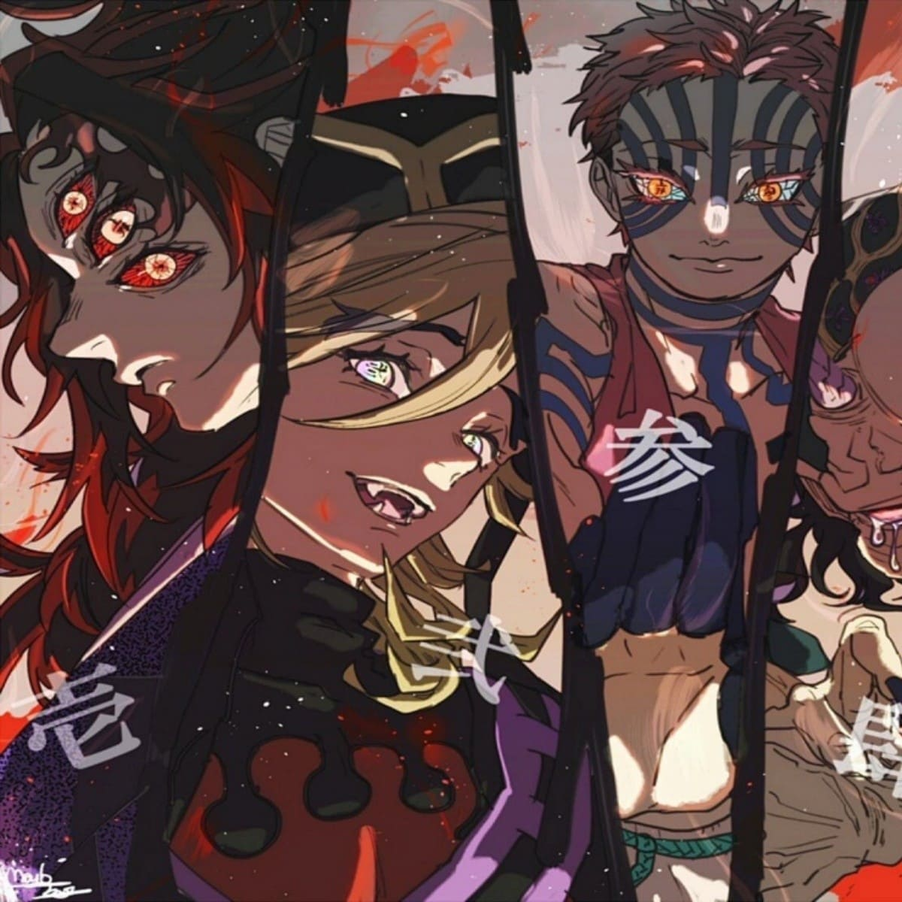

Doce Lunas Demoníacas
Doce Lunas Demoníacas (十じゅう二に鬼き月づき, Jūnikizuki) fue una organización compuesta por un grupo de doce Demonios que perseguían el objetivo de encontrar el Lirio de la Araña Azul. La organización fue creada y liderada por Muzan Kibutsuji; los demonios que la componían estaban bajo el total de Muzan y éste se encargaba de brindarles una porción considerable de su sangre como recompensa al seguir sus ordenes. La mayoría de sus operaciones y reuniones se llevaban a cabo en la Fortaleza Dimensional Infinita. Estuvieron activos por cientos de años hasta su destrucción tras darse inicio al ataque a la fortaleza.